Dynastie Qinwiki-fr
 Dynastie Hanmemo:civilisations
Dynastie Hanmemo:civilisations Dynastie Tangwiki-fr
Dynastie Tangwiki-fr
Dynastie Songwiki-fr
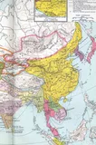
Dynastie Mingbing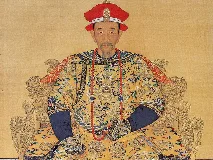
Dynastie Qingbing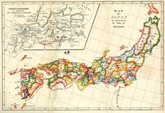
Shogunat Tokugawabing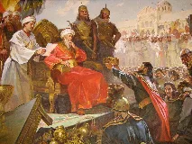
Califat omeyyadebing
Califat abbassidememo:civilisations
Dynastie ShangECHEC
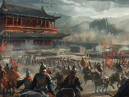
Dynastie Zhoubing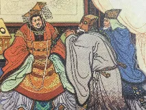
Dynastie Suiwiki-fr
Dynastie Yuanwiki-fr
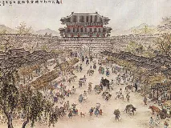
Dynastie Joseonbing
Shogunat Kamakurabing
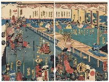
Shogunat Ashikagabing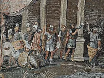
Lagideswiki-en
Dynastie fatimidebing
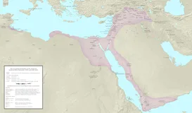
Dynastie ayyoubidewiki-en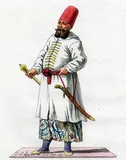
Mameloukswiki-fr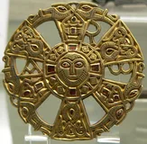
Mérovingienswiki-fr
Carolingiensbing
Capétiensbing
 Maison de Valoisbing
Maison de Valoisbing Maison de Bourbonbing
Maison de Bourbonbing
Plantagenêtbing
 Maison de Tudorbing
Maison de Tudorbing Maison Stuartbing
Maison Stuartbing
Maison de Windsorbing
 Maison de Habsbourgbing
Maison de Habsbourgbing
Hohenstaufenbing
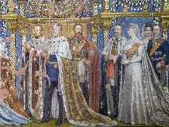
Hohenzollernbing
Maison de Savoiebing
 Maison d'Orange-Nassaubing
Maison d'Orange-Nassaubing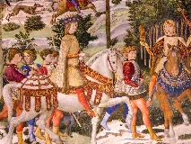
Médiciswiki-fr
Romanovbing
Dynastie Piastbing
Jagellonsbing